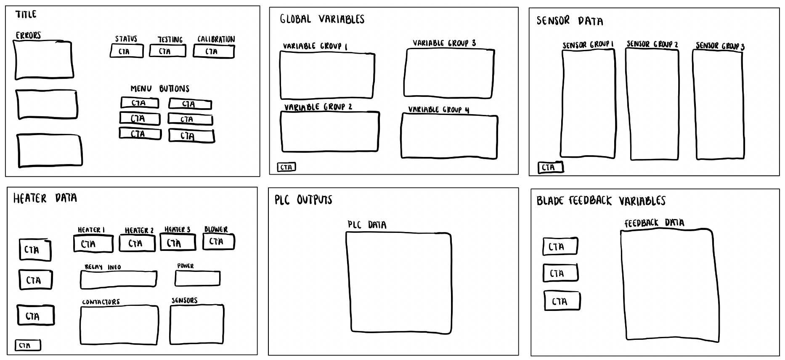

System Commissioning
Interface
Scope
The project scope was first defined by outlining usability metrics, to be used to evaluate the final design. These metrics were proposed to the engineering team, and were finalized to be:
Effective
The effectiveness of the commissioning UI shall not be less than 80%.
Satisfying
The commissioning UI shall have an overall single ease question (SEQ) score
of at least 5.9.
Error Tolerant
The commissioning UI shall reflect 100% of configured values for the
user to confirm that values have been successfully changed
Easy to Learn
Users will be able to use the commissioning UI while consulting the user
manual for 20% of tasks.
Efficient
Users will be able to navigate to desired locations of the commissioning UI
within 60 seconds.
Usable
The system usability scale (SUS) for the commissioning UI shall have a score of at least 70.
As well, functional requirements for what the commissioning UI must include were defined, through the process outlined above. These requirements included aspects such as allowing configurability of various variables, displaying system outputs, and showing system errors.
Wireframing
A low fidelity wireframe was mocked up, to get a sense of the overall layout. Six screens were created, being the main menu, a global variables page, a sensor data page, a heater data page, PLC outputs page, and a page for blade feedback variables.
From here, a medium fidelity wireframe was created in Figma. The focus of this wireframe was on location of pieces of information, format of design features, and emphasis on call-to-action areas. This stage also allowed for implementation of interface design best practices. Interaction design was explored through means of Fitt's law. Fitt's law was implemented by utilizing the edges of the screen to house the "back" and "logout" buttons for the design. Visual design was implemented to create an effective user interface design, through the implementation of hierarchy. This was done through the use of bigger fonts for page titles and section headings, and smaller fonts for instructions and page information.